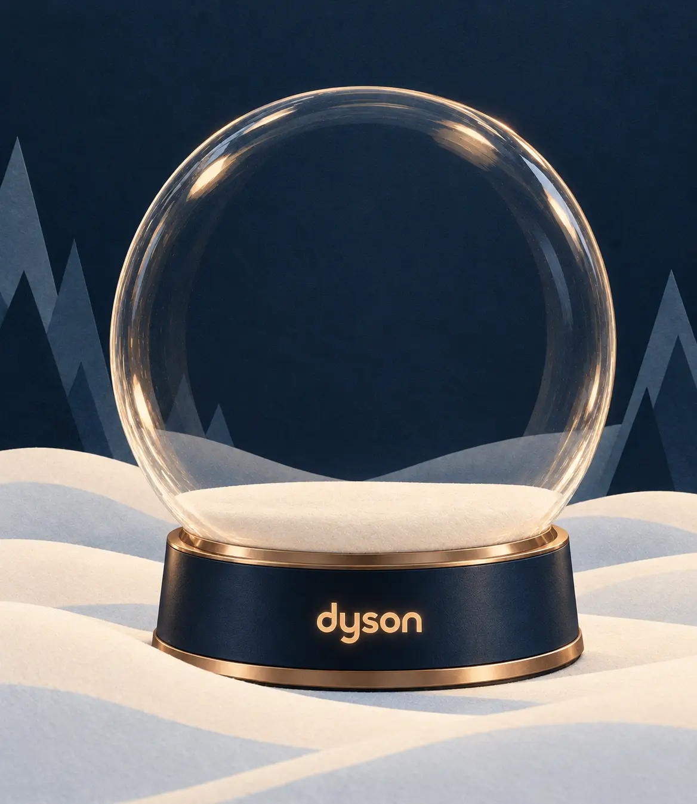

企劃預覽模式 · 測試收藏不計入正式紀錄
A LITTLE WONDER, EVERY DAY
把聖誕 一點一點收藏
玩遊戲收藏聖誕驚喜，傳送專屬祝福，解鎖限量優惠券。
我的聖誕雪境0 / 25 件收藏

正在準備冬日雪境…
Merry Christmas
20 秒 · 可隨時重播
把你的聖誕世界，送給一個人。拍下此刻的雪境，寫一張專屬聖誕卡。
聖誕旋律
12/7、12/24、12/25 開啟禮盒解鎖 · 音樂與操作音效分開控制
第一份驚喜，從 12 月 1 日開始。
每一次開啟，都為雪境留下一點新的光。
A LITTLE SECRET FOR YOU
你的限定收藏
FIVE FESTIVE PRIVILEGES
累積收藏，解鎖聖誕禮遇
四款產品各附一份優惠券，收藏即解鎖。另於活動期間累積參與 10 個不同台灣日期，可解鎖 Dyson 全品項折抵 $1,000；不需連續，同日補領多份禮物只算參與一天。優惠內容與使用條件以券面說明為準。